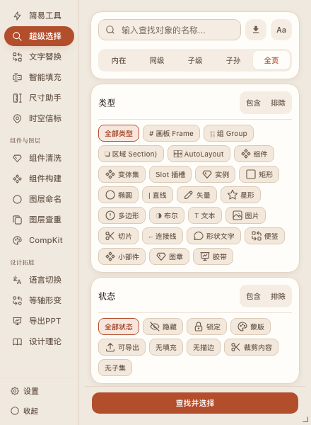
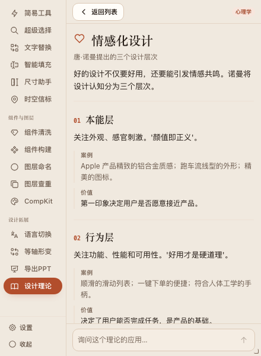
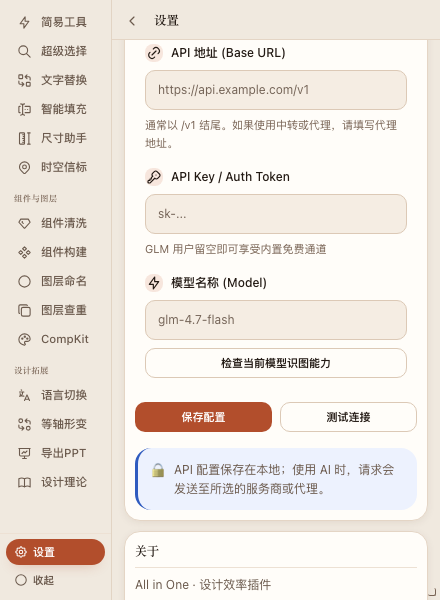
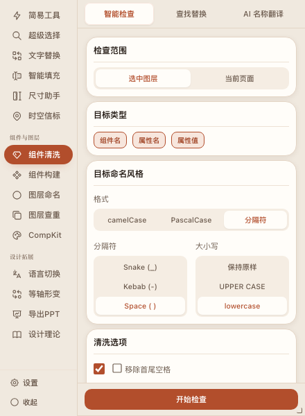
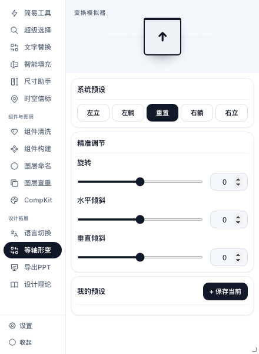
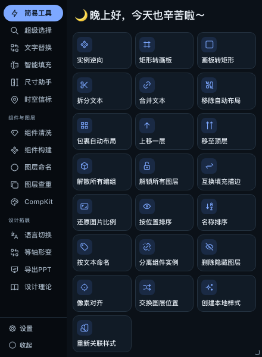

这一轮修掉的具体问题
选择/查重的卡片间距、知识文章版式、设置按钮、清洗卡边距、形变预览、暗轨按钮
FIXES

选择 / 查重 · 卡片间距
6px
卡片不再被 16px 外层 gap 推开；查重面板同规则

知识文章 · 阅读版式
单列 · 无内嵌色块
编号、导语、案例/价值三层；去掉了重复底色块

设置 · 模型测试
8px
检查按钮与模型输入框之间留出间距

组件清洗 · 卡片边距
四周 12px
卡片不再压住面板边界；内层格式保持平面

白瓷 · 形变预览
浅底 + 网格
预览方块、方向和坐标线都能看清

暗轨 · 简易工具
卡片底色
按钮与背景分开，不再整片融在一起